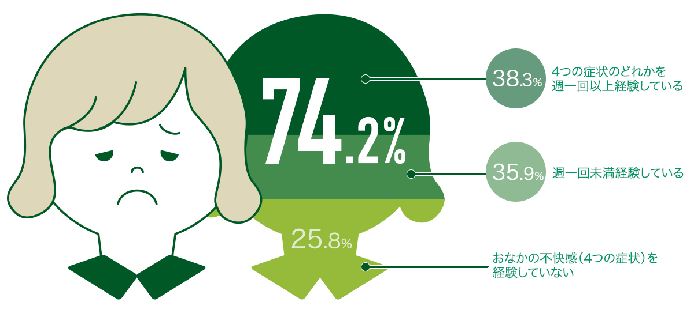

胃酸や胆汁酸によって胃や小腸で死んでしまう一般的なビフィズス菌とは違い、
ダノンビオのビフィズス菌BE80は容器の中から大腸まで生きたまま届きます。
この高生存ビフィズス菌BE80が入ったダノンビオ(プレーン・加糖)*は、
「おなかの不快感をやわらげる」機能性表示食品です。
実は、多くの日本人女性がおなかの不快感で悩んでいます。

おなかの不快感(4つの症状：ガス／違和感／ゴロゴロ感／張り)を経験している女性**
あなたもダノンビオ(プレーン・加糖)*でスッキリ体験を！
BE80 届出表示：本品にはビフィズス菌BE80が含まれ、おなかの不快感※をやわらげることが報告されています。※おなかの不快感とは、健康な人の日常生活でみられる下部消化管における過剰なガスの発生とおなかの張り、ゴロゴロ感や違和感のことです。食生活は、主食、主菜、副菜を基本に、食事のバランスを。本品は、事業者の責任において特定の保健の目的が期待できる旨を表示するものとして、消費者庁長官に届け出されたものです。ただし、特定保健用食品と異なり、消費者庁長官による個別審査を受けたものではありません。 摂取上の注意：●本品は多量摂取により疾病が治癒したり、より健康が増進するものではありません。●本品は、疾病の診断、治療、予防を目的としたものではありません。●本品は、疾病に罹患している者、未成年者、妊産婦（妊娠を計画している者を含む。）及び授乳婦を対象に開発された食品ではありません。●疾病に罹患している場合は医師に、医薬品を服用している場合は医師、薬剤師に相談してください。●体調に異変を感じた際は、速やかに摂取を中止し、医師に相談してください。●一日あたりの摂取目安量：2カップ（150g） ●機能性関与成分名：ビフィズス菌BE80（Bifidodacterium Lactis CNCM I-2494）含有量：89億個 ●届出番号 A309
＊ プレーン加糖75g×4P ＊＊ データ出典元：2016年12月ダノン調べ 対象者：女性20～69歳 519人 質問内容：「以下のお腹の不調の中で、あなたが普段経験している症状はありますか。症状がある場合、普段どのくらいの頻度で感じていますか。 1. 過剰なガスの発生 2. お腹に違和感を感じる 3. お腹がグルグル ゴロゴロ言う 4. お腹が張る感じ